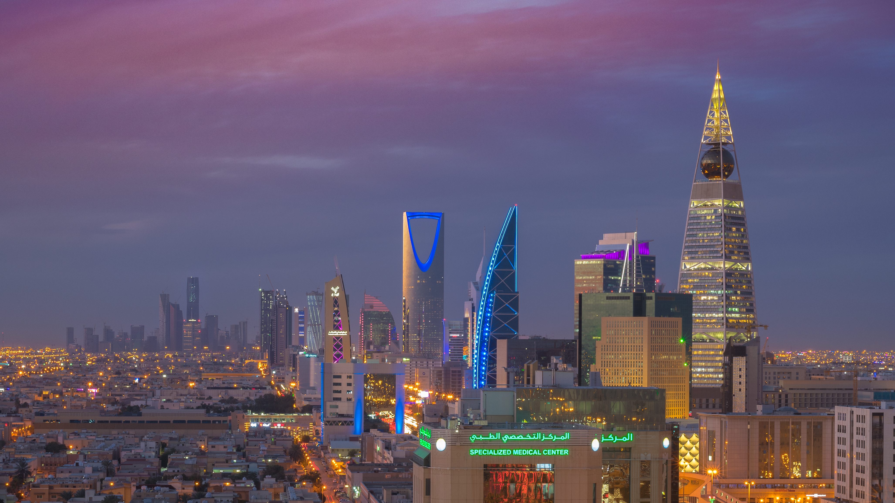

Riyadh - The Capital الرياض - العاصمة
As the capital of Saudi Arabia, Riyadh combines modern architecture with rich cultural heritage. Explore historic sites, modern shopping malls, and experience traditional Saudi hospitality. كعاصمة المملكة العربية السعودية، تجمع الرياض بين العمارة الحديثة والتراث الثقافي الغني. استكشف المواقع التاريخية ومراكز التسوق الحديثة واختبر الضيافة السعودية التقليدية.
Top Attractions أبرز المعالم السياحية

Al Masmak Fortress قصر المصمك
Historic 19th-century fortress symbolizing the unification of the Kingdom. حصن تاريخي يعود للقرن التاسع عشر، يُعد رمزًا لتوحيد المملكة.

Kingdom Centre Tower برج المملكة
Iconic skyscraper with shopping mall, hotel, and panoramic viewing platform. ناطحة سحاب أيقونية تحتوي على مركز تسوق وفندق ومنصة مشاهدة بانورامية.

National Museum المتحف الوطني السعودي
Showcases the history and culture of Saudi Arabia through the ages. يعرض تاريخ وثقافة المملكة العربية السعودية عبر العصور.

Al Turaif District, Diriyah حي الطريف، الدرعية
UNESCO World Heritage site, reflecting the history of the first Saudi State. موقع تراث عالمي لليونسكو، يعكس تاريخ الدولة السعودية الأولى.

Riyadh Boulevard بوليفارد الرياض
Entertainment zone with restaurants, cafes, and artistic performances. منطقة ترفيهية تضم مطاعم ومقاهي وعروضًا فنية.